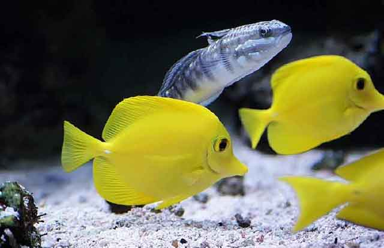
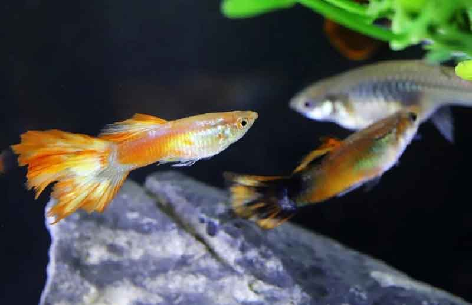
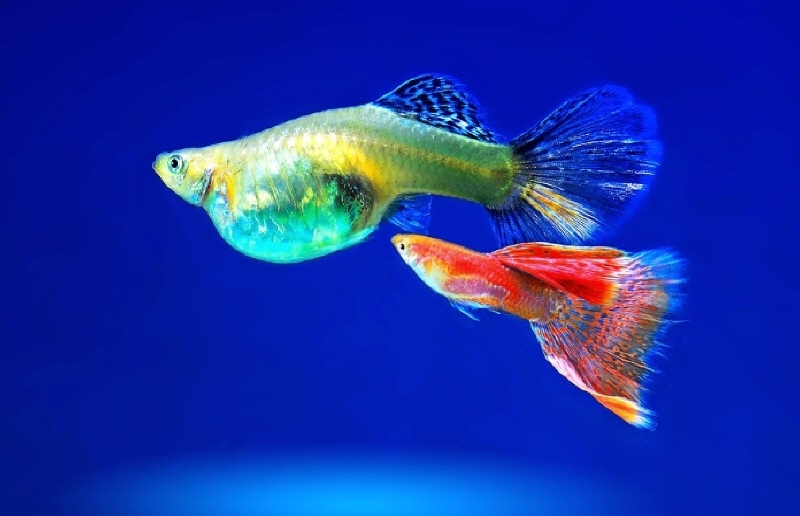
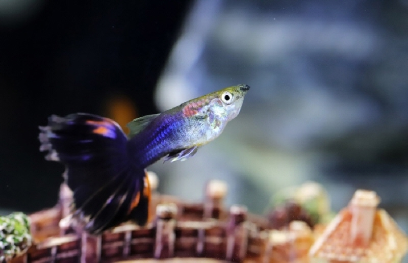
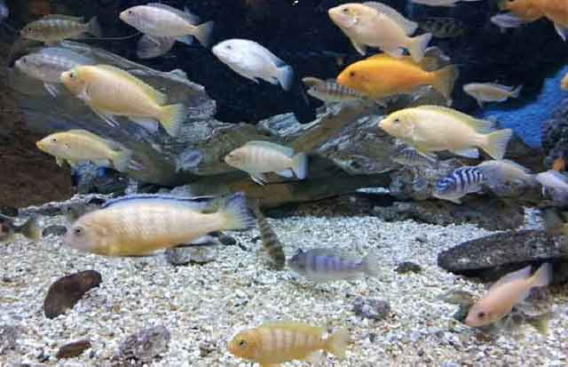

초보자도 쉽게 키울 수 있는 열대어 종류!
관상어 키우는 사람들이 많이 늘었습니다. 과거에는 접할 수 있는 반려동물 종이 그다지 많지 않아서 강아지, 고양이, 햄스터 등이 전부였지만, 요즘은 정보만 잘 찾아보면 합법적으로 키울 수 있는 반려동물 종이 아주 많은 편이죠. 열대어는 마니아층이 두껍다고 소문날 정도로 한 번 키우기 시작하면 푹 빠져 헤어나오기 힘든 반려동물 중 하나입니다. 작고 아름다운 열대어, 초보자도 쉽게 키울 수 있는 종을 알아볼게요!
[구피]
관상어 하면 열에 아홉은 떠올린다는 종, '구피'. 사육 난이도가 쉽고, 온순한 성격이라 무난하게 키울 수 있는 종입니다. 초보자는 모든 것이 서툴러서 자칫 어항 관리를 제대로 하지 못해 관상어를 죽게 만들 수 있는 데요. 구피는 주변 환경 적응 능력도 뛰어나고 번식력도 좋은 편이라 선호도가 높은 편입니다. 게다가 색깔도 다양해 관상용으로는 적격이죠!
[베타]
공작새만큼 화려한 꼬리를 자랑하는 '베타'입니다. 여러 갈래로 뻗은 지느러미가 물결을 따라 움직이면, 아름다움이 흘러나오는 듯한 자태를 뽐냅니다. 게다가 작은 공간이라도 스트레스를 덜 받는 편이라 물 관리만 잘해 준다면 비교적 잘 적응해 살아갑니다. 다만, 베타는 공격성이 강한 종으로 여러 마리를 두는 것은 좋지 않습니다.
[엔젤피쉬]
삼각형 모양이 천사의 날개 같은 지느러미를 갖고 있다 해서 '엔젤'이라는 이름이 붙었습니다. 엔젤피쉬 역시 초보자가 쉽게 시작할 수 있는 종이고 유유자적 다니는 모습을 구경하다 보면, 절로 마음이 평온해지기도 합니다. 단! 수질 상태에 아주 민감한 어종으로 여과기는 필수 평소에도 수질 관리를 철저하게 해주어야 합니다.
[비파]
비파 역시 많이 들어 본 관상어 종 중 하나입니다. '청소 물고기'라는 별명이 있고 온순하고 조용한 것이 특징입니다. 비파는 독특한 입과 다른 종과 다르게 수족관 이끼나 바닥에 남은 사료를 먹는 특징을 갖고 있거든요. 다른 관상어에 비하면 외모로는 뛰어나지 않지만, 다른 종과 잘 어울리고 말썽을 피우지도 않아 초보자가 키우기 쉽습니다.
[수마트라]
군형을 이루는 어종으로 혼자서 생활하기보다는 여러 마리가 함께 이동하는 것을 좋아합니다. 소형 열대어 중에서는 생명력이 좋고, 속도가 빨라 요리조리 무리 지어 다니는 모습이 인상적인 열대어입니다. 구피 만큼 초보자가 키우기 쉬운 종 중의 하나입니다.
초보자가 키우기 쉬운 열대어는 이 외에도 플래티, 네온테트라, 구라미, 골드구라미, 니그로 등이 있습니다. 저마다 아름다운 모습을 뽐내는 관상어, 그래도 그 성격만큼은 차이가 있으므로 각각의 성향을 잘 파악해 하나씩 종을 늘려간다면 머지않아 아름다운 어항을 만들 수 있지 않을까요?
[출처] 초보자도 쉽게 키울 수 있는 열대어 종류! ｜ 작성자 goddaeik